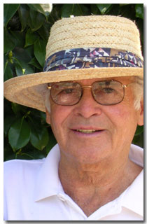
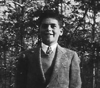
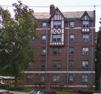
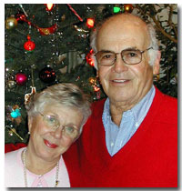

|
 |
|

|
Alexander Dawson Henderson III was born in New York City on March 26, 1924. He is the third Henderson to carry down the Alexander Dawson Henderson family name. |
||
|
Important Facts
|
||
|
March 26, 1924
|
Born at the Fifth Avenue Hospital in New York City at 11:45 A.M. Alex was 6 Ibs. 15 oz.. at birth. Alex is the second child of Alexander D. Henderson and Mary Barnes Anthony. Source: Alex's birth certificate. |

Suffern House, New York. |
|
|
1924 - 1929
|
Alexander and his family lived in Suffern, New York across the road from his grandparents. They had a German nanny. Source: Mary's Family Connections, pg. 85. | ||
|
January 25, 1925
|
Grandfather Henderson Sr. died in Suffern, New York. Source: NY Death Certificate #5375 and the Suffern newspaper. | ||
| Alex and his sister Mary-Ella went to a two-room red school house in Suffern. Source: Conversation with Alex |

1924 - A. D. Henderson I, II, III | ||
|
1929-1932
|
The family moved into a large two-story country home in Tallman, New York. They lived in Tallman for four years. His father kept his polo pony "Ginger" in the barn. The 5 acre property had an apple orchard and birch trees. Grandmother Anthony had a lovely cottage on the property (behind the orchard). The family had a red setter named "Ciders". Source: Mary's Family Connections, pg. 97. | ||
| In Tallman, Alex remembers having a Irish Setter, some rabbits, and getting a baby white goat for one of his birthdays. |
Alex (3) & Mary Ella (5) 1927 |
||
|
|
Grandmother Henderson (Ella Brown) had a chauffeur and car to take the grandchildren to her home for visits. They drove a Packard Limousine. At bedtime, she would read to her grandchildren Bible stories from the Old Testament. Her estate had a butler, James, and a cook. She had a working farm with a cow, large vegetable garden, lake stocked with fish, and a huge greenhouse. Alex's sister, Mary-Ella remembered playing with the gardener's children at times. Source: Letter from Mary-Ella Henderson Griswold. | ||
|
1929
|
When the Great Depression began, the California Perfume Company cut their shareholder dividends, which resulted in a loss of income for the Henderson family. Source: Jerry's autobiography, So Long, It's been good to Know You, pg. 5. | ||
| April 3, 1930 | The 1930 U.S. Census lists Alexander D. Henderson (35), Nonny (30), Mary Ella (7), Alexander (5) and Laura J Anthony (60), living in Ramapo, Rockland, New York. Source: Year: 1930; Census Place: Ramapo, Rockland, New York; Roll: 1641; Page: 1A; Enumeration District: 38; Image: 12.0. |
Alex & Mary Ella (1932) |
|
| 1932 | Aec & Mary Ella were in West Palm Beach, Florida. Rented a house during the winter. They went to an elementary school there. Father took them out on a fishing boat. | ||
|
1933
|
The family moved to the Hudson View Gardens in a two-bedroom apartment at 1836 Pinehurst Avenue, apt. D21, overlooking the Hudson River in New York City (near 186th Street). Source: Mary's Family Connections, pg. 111. | ||
| 1933 |
In New York City, Alex remembers playing in the park, had a collection of marbles, and played stick hockey on roller skates in the streets of New York. |
Alex Henderson |
|
| 1933 | The family took winter vacations in Palm Beach, Florida. One year the family took a his ship down to Jacksonville, Florida with their car onboard. They then drove the car down to Palm Beach and spent a several of months there. Source: Conversation with Alex Henderson. | ||
| 1934 | Uncle Jerry took Alex up in his two-seater open cockpit airplane from Suffern, when he was 10 years old. Source: Conversation with Alex Henderson. | ||
|
1934
|
Alex's mother and father were separated. His mother went to Reno to get the divorce. While she was in Reno, Alex went to summer camp. Source: Mary's Family Connections, pg. 111. |
||
|
1934-36
|
At age 10, Alex went to Camp Dudley (three summers) at Westport on Lake Champlain, New York. Source: Conversation with Alex Henderson. | ||
|
1937
|
At age 13, his mother moved into a two-bedroom Englewood apartment on 100 East Palisade Avenue, Englewood, New Jersey (book says 1939). She wanted to get out of the city to live in the country. Source: Mary's Family Connections, pg. 111. Alex remembers the apartment was at the top level with cathedral ceilings. It was a nice area. Alex joined the Boys Scout camp at the Presbyterian church. He played tennis at the Field Club in Englewood. At age 14, he started to play bridge with some friends. |
 Alex Henderson |
|
|
The family went to Spring Lake, New Jersey in the summer time where they had beaches. At the 8th Avenue subway on 186 street station at the end of the line, Alex sold the Lady's Home Journal and the Saturday Evening Post in the subway. |
|||
| 1938 | Alex started collecting stamps. His stamp album was titled the International Junior Postage Stamp Album. This stamp album is still in the family today. Source: Conversation with Alex Henderson. |
 Dwight Manor100 E Palisade Avenue Englewood, New Jersey |
|
| 1938 | Alex went to the Englewood School for Boys near the Dwight School for Girls that his sister went to in Englewood, New Jersey. His father paid the expenses of private school. See Dwight-Englewood School for more details. He was on the Englewood Baseball team. Source: Mary's Family Connections, pg. 111. | ||
| 1939 | At age 15, Alex's mother sent him to dancing school and he learned the "tango". He also loved his bicycle and went everywhere on it. Source: Conversation with Alex Henderson. | ||
|
August 1939
|
At age 16, Alex went to the Birch Island Sailing Camp in Main. He became a Junior Racing Skipper. Source: Conversation with Alex Henderson. | ||
| January 17, 1940 | Grandmother Ella Brown Henderson died in Suffern, NY. Source: ProQuest Historical Newspapers The New York Times, pg. 23. |
|
|
| April 2, 1940 |
The 1940 US Census lists Mary A. (46), Mary-Ella (17), and Alexander D. Henderson (16) were living in an apartment at the Dwight Manor, 100 E Palisade Avenue, Englewood New Jersey. Source: 1940 US Census, ED 2-71; Englewood, Bergen, New Jersey. |
||
|
1941-42
|
Alex graduated from the Williston Academy private High School of Easthampton, Massachusetts. He played tennis, baseball, and soccer and was on the high school tennis team. Source: Conversation with Alex Henderson; The Log, 1942 Year Book. | ||
| December 7, 1941 | The attack on Pearl Harbor prompted the US to declare war on Japan. | ||
|
August 4, 1943
|
Alex enlisted into the U.S. Army during World War II. He went to radio school in Sioux Falls, South Dakota. He was in the cadet program for flyers at Lafayette College in Easton, Pennsylvania. He studied aerial photography in Casper, Wyoming at a B-24 bomber air force base. He also went to the Las Vegas Aerial Gunnery School. Alex received the following medals: American Campaign medal, Asiatic-Pacific campaign medal, and the World War II Victory Medal. Source: Conversation with Alex Henderson. |
U.S. Air Force Cadet |
|
| October 23, 1943 | His sister, Mary Ella married Stuart Walter Hinrichs at Saint James Church, Madison Avenue, New York. |
Alex, Nonny, Mary-Ella |
|
| 1944 | Alex was listed in the section entitled "Men in Service." He is under the Class of 1944 yearbook, as Alexander D. Henderson, III, U.S. Army Accessions Command (USAAC). Source: Williston Alumni staff. | ||
| August 15, 1945 | Japan surrendered, ending World War II. | ||
|
March 8, 1946
|
Alex left the military service and signed up for the government unemployment program for veterans that was known as the "52-20 Club". They gave you $20 for 52 weeks. Source: Conversation with Alex Henderson. | ||
|
1946
|
Alex returned to his mother's Englewood Apartment. Alex remembers that Uncle Jerry visited Nonny and her children in New York from time-to-time. Source: Conversation with Alex Henderson. | ||
|
1946-48
|
Alex worked at the Johnson and Faulkner (later shortened to JOFA) Wholesale Fabric Company at 45 East 53rd Street, New York City. He spent six months as a salesman in Chicago. Source: Conversation with Alex Henderson. | ||
|
Fall 1948
|
At age 24 Alex and a friend drove two new cars to California for Uncle Jerry who also came along. One car was a new Lincoln Continental the other card he drove was a Ford. Source: Conversation with Alex Henderson. |
Alex in Carmel with 1949 Ford (his 1st car) | |
1948 |
Alex needed a job so traveled to San Francisco and worked at the California State Automobile Association selling memberships at 150 Van Ness Avenue, San Francisco. He lived in a Pacific Heights boarding house for $70 a month). Source: Conversation with Alex Henderson. | ||
| All veterans were eligible for the program that was known as The G. I. Bill of Rights. The Government paid for all tuition, books and fees. They also gave them $75 a month for living expenses. Source: Servicemen's Readjustment Act of 1944, http://www.gibill.va.gov Web site. | |||
1949 |
Alex graduated with a 2 year degree from the Monterey Peninsula College in Monterey, California. Source: Conversation with Alex Henderson. | ||
1949 |
Grandmother Laura Frontgous Anthony died (Nonny's mother) in Ridgewood, NJ. |
A.D. Henderson III | |
|
1949
|
Alex worked at the Mahar's Men's English style Store on Ocean Avenue in Carmel, California. He got paid 8.00 a week. Source: Conversation with Alex Henderson. | ||
Fall 1949 |
Alex met Patricia Ford at a cocktail party in Carmel, California. Previously, he had seen Pat at the Carmel ski club and at the Mission Ranch bar & restaurant. Source: Conversation with Alex Henderson. | ||
Fall 1950 |
Alex moved to 189 S. 3rd St. San Jose to begin studies at the San Jose State University. Source: Conversation with Alex Henderson. |
Alex & Pat Wedding | |
|
Dec. 9, 1950
|
The Monterey Peninsula Herald announces the engagement of Patricia Ford to Alexander D. Henderson. Source: Monterey Peninsula Herald. | ||
|
February 17, 1951
|
At age 26, Alex married Patricia Ford at his mother-in-laws ranch in Carmel Valley (Moon Trail Ranch). Click on wedding photo. Source: Marriage certificate for Alex and Pat.. | ||
| Alex and Pat had a honeymoon was in Ensenada, Mexico. Source: Conversation with Alex Henderson. |
Dawson, Alex, and Pat |
||
| September 14, 1951 | Alex presented the Third Place award in the Mercury Races at Pebble Beach to Ralph Suchon of Carmel. The award was donated by G. B. Henderson of Carmel. Source: The Carmel Spectator. | ||
|
1951
|
Alex and Pat set up housekeeping at their 797 E. William Street apartment in, San Jose, California. Source: Conversation with Alex Henderson. | ||
November 23, 1951
|
Alexander Dawson Henderson IV was born in Monterey, County, California. Source: California Birth Index, 1905-1995. (Note: birth record says November 19th). |
Alex's Graduation |
|
1952
|
Alex graduated from San Jose State University. He received a Bachelor of Arts Degree. Source: Conversation with Alex Henderson. | ||
Fall 1952
|
Moved to Alameda, California for a job at Montgomery Wards as a merchandiser. Source: Conversation with Alex Henderson. | ||
|
July 1953
|
Moved to 609 Genevieve Lane in San Jose for a job as an Investigator at Household Finance Corporation. Source: Conversation with Alex Henderson. | ||
| Alex and Pat bought a house on Pruneridge Street in San Jose for $13,250. This home was part of the Crestview homes. The $12,950 model was 1250 SQ. FT. with 2 full baths. Army Veteran's FHA loans were available. Source: Conversation with Alex Henderson. |
Greg Henderson |
||
|
July 29, 1953
|
Gregory Ford Henderson was born in Carmel, California. Greg was several months premature. Source: Greg's Birth Certificate. | ||
|
April 4, 1955
|
David Gerald Henderson was born in Santa Clara, California. Source: California Birth Index, 1905-1995. |
Dave Henderson |
|
| Mr. and Mrs. Alex D. Henderson of Hillsboro Beach were on holiday in Nassau. The couple were among a large group of Broward Countians who spent the weekend at the British Colonial. They relaxed on the shuffleboard court before an earning dinner dance. | |||
July 5, 1957 |
His father convinced Alex to moved to Florida. He stayed at his father's Avon by the Sea apartments in Hillsboro, Florida while a new house was being built. | The family moved into a new house at 3532 N.E. 31st Avenue, Pompano Beach, Florida. The house was on the intercoastal. Alex later bought a boat with a hoist to pull the boat out of the water. | |
March 10, 1958 |
Scott Douglas Henderson was born at the Holy Cross Hospital in Pompano Beach, Florida. |
Scott Henderson |
|
|
1957-68
|
Alex created the Gold Coast Finance Company to provide credit to middle income consumers. | ||
|
1963
|
The family moved to Sea Ranch Lakes in Ft. Lauderdale by the Sea, Florida. | ||
|
November 5, 1963
|
Holly Alexandra Henderson was born at the Holy Cross Hospital in Pompano Beach, Florida. |
Holly Henderson |
|
|
July 9, 1964
|
Alex's father, Henderson Jr. died at the Massachusetts General Hospital in Boston, Massachusetts of a blood disease. Source: Sun Sentinel newspaper of Pompano Beach, Florida. | ||
| January 1968 | Pat and Alex were divorced in Broward County. Source: Florida Divorce Index, Certificate Number: 208. | ||
| Summer 1969 | Pat and the children moved to Carmel Valley, California to be closer to her mother. | ||
|
April 9, 1970
|
Alexander Dawson Henderson is listed as married to Madonna Marie Schaffner in West Palm Beach, Florida. Source: Ancestry.com. Florida Marriage Collection, 1927-2001; Certificate: 018335. |
 Alex & Donna |
|
|
1975-1999
|
Alex bought a second home in Aspen, Colorado. The house was on the golf course. He also rented a home in Carmel, California. | ||
| 1984 | Alex and Donna built their dream house on the ocean at 1212 Hillsboro Mile, Hillsboro, Beach, Florida. The unique design won several awards and appeared on the T.V. show "Miami Vice." | ||
|
1976-1982
|
Alex purchased farmland in Fresno, Madera, and Bakersfield California. He grew apples, almonds, and kiwifruit. He later sold these farms in 2006. | ||
| 1997 | Alex bought a home at the Carmel Valley Ranch Club in Carmel Valley, California. The house is where he lives today. It has a golf course, tennis courts and a clubhouse. | ||
|
2008
|
Alex enjoys playing bridge and has recently won the title of "Bridge Master". |
||
| 2020 |
Alex has recently had some health issues and is recuperating at home in Carmel Valley, California. |
||
| May 12, 2020 |
Alex, age 96, passed away peacefully in his home in Carmel Valley. |